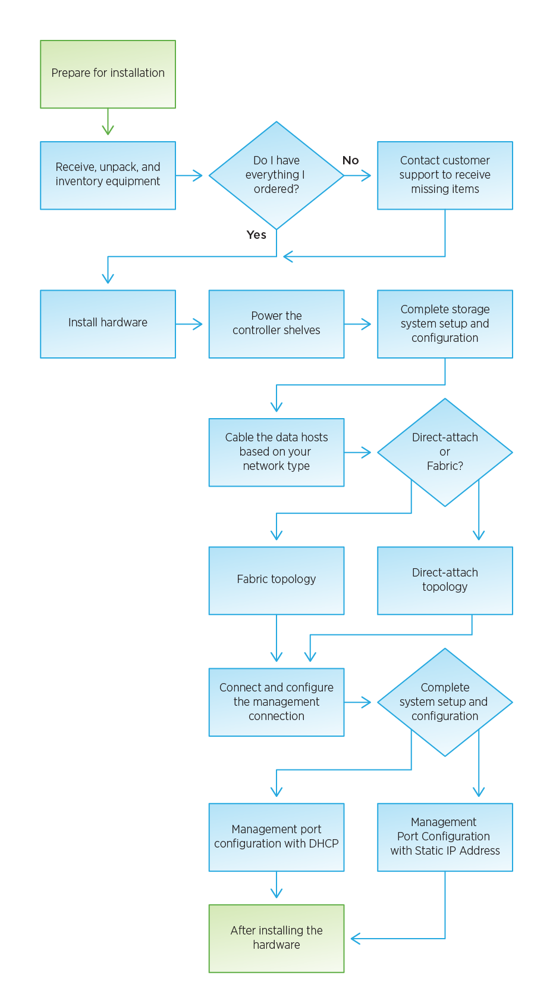

发行说明
发行说明
简体中文版经机器翻译而成，仅供参考。如与英语版出现任何冲突，应以英语版为准。
安装过程
贡献者
 建议更改
建议更改单独 PDF 文档的收集
Creating your file...
This may take a few minutes. Thanks for your patience.
Your file is ready
在安装和设置新存储系统之前，请熟悉安装过程：
